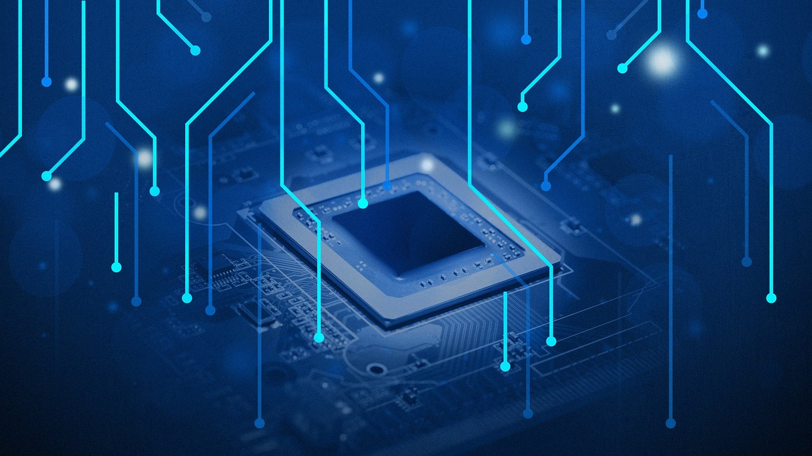

Introducción

Los sistemas operativos (SO) son una parte fundamental de la informática moderna.
Su propósito principal es actuar como intermediarios entre el hardware de la computadora y el usuario, facilitando la interacción con el sistema y gestionando los recursos del hardware.
Unidad 1
Los sistemas operativos son esenciales para el funcionamiento de las computadoras y dispositivos modernos.
Al estudiar su diseño y funcionamiento, se adquiere una comprensión profunda de cómo se gestionan los recursos de hardware, cómo se ejecutan los programas y cómo se proporciona un entorno seguro y eficiente para los usuarios y las aplicaciones.
Unidad 2
La administración de procesos es una de las funciones fundamentales de un sistema operativo, que se encarga de gestionar y coordinar la ejecución de procesos en un sistema informático.
Comprender estos conceptos es fundamental para desarrollar aplicaciones efectivas, optimizar el rendimiento del sistema y garantizar una experiencia de usuario fluida.